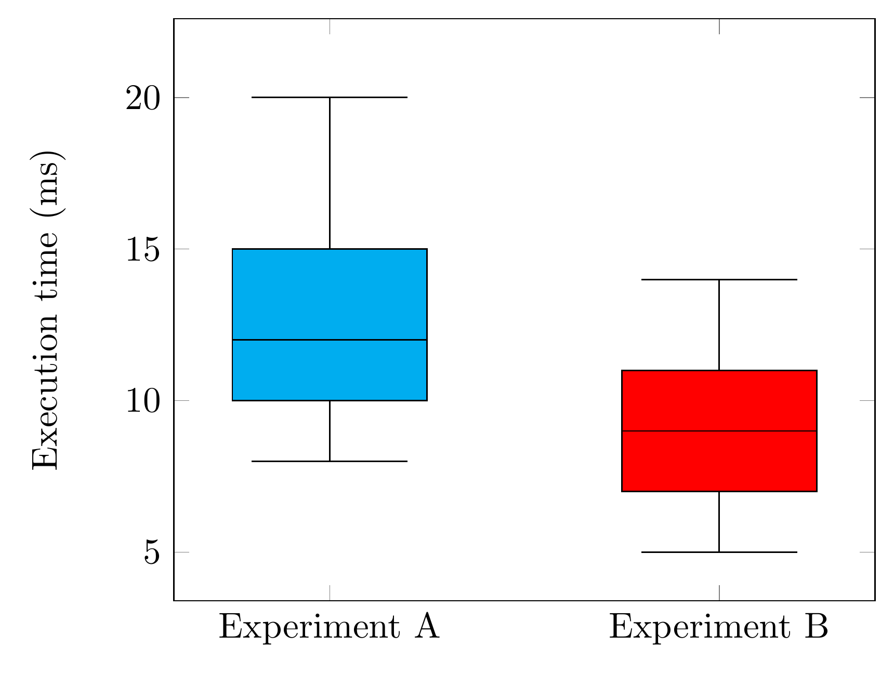
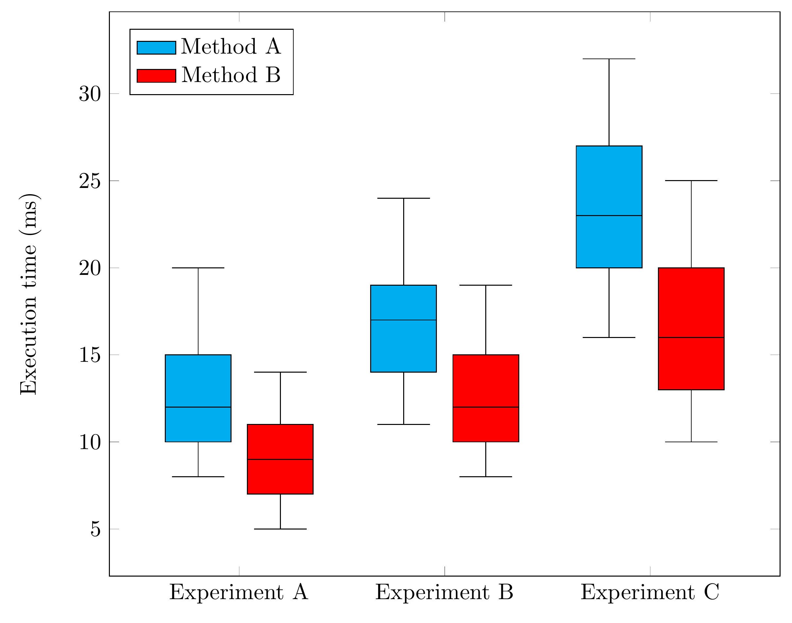
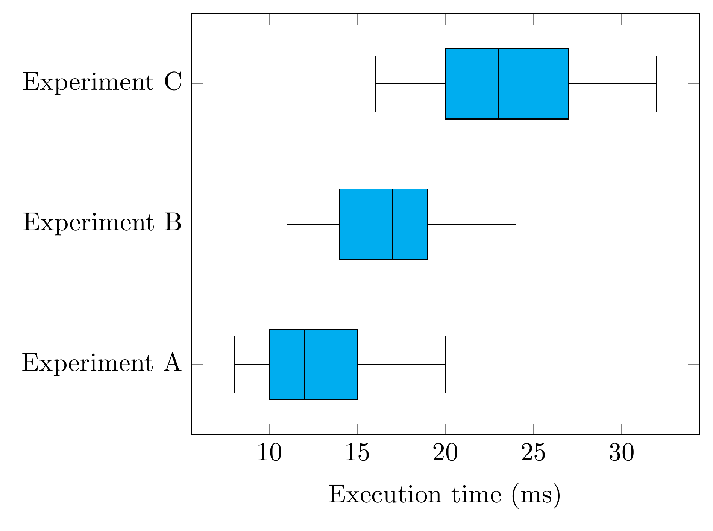

Note
Go to the end to download the full example code.
Box plots and grouped comparisons#
Compare experiments using manually supplied summary statistics.
Supply the two whisker ends, two box edges, and median directly. No raw samples are required. Repeated calls add boxes to the same axis; outliers are optional and supplied separately.
import pykz
pykz.figure()
axis = pykz.ax(ylabel="Execution time (ms)")
pykz.boxplot(8, 10, 12, 15, 20, position=1, fill="cyan", ax=axis)
pykz.boxplot(
5, 7, 9, 11, 14, position=2, outliers=[18, 21], fill="red", ax=axis
)
pykz.xticks([1, 2], ["Experiment A", "Experiment B"], ax=axis)
pykz.save("boxplot_comparison.tex", standalone=True)
pykz.io.export_pdf_from_file("boxplot_comparison.tex")

Removing boxplot_comparison.log
Removing boxplot_comparison.aux
PosixPath('boxplot_comparison.pdf')
For grouped comparisons, grouped_boxplot computes positions and widths, labels each experiment, and adds just one legend entry per method. Each experiment contains one summary per method, in the same order. Summaries run from lower whisker through lower quartile, median, upper quartile, to upper whisker. Per-method styling stays consistent across experiments.
method_a = [(8, 10, 12, 15, 20), (11, 14, 17, 19, 24), (16, 20, 23, 27, 32)]
method_b = [(5, 7, 9, 11, 14), (8, 10, 12, 15, 19), (10, 13, 16, 20, 25)]
pykz.figure()
axis = pykz.ax(
ylabel="Execution time (ms)", legend_pos="north west", width="12cm"
)
experiments = list(zip(method_a, method_b))
boxes = pykz.grouped_boxplot(
experiments,
experiment_labels=["Experiment A", "Experiment B", "Experiment C"],
method_labels=["Method A", "Method B"],
method_options=[{"fill": "cyan"}, {"fill": "red"}],
ax=axis,
)
pykz.save("boxplot_grouped.tex", standalone=True)
pykz.io.export_pdf_from_file("boxplot_grouped.tex")

Removing boxplot_grouped.log
Removing boxplot_grouped.aux
PosixPath('boxplot_grouped.pdf')
Horizontal boxes use the same statistics. Positions now lie on the y axis, so label the groups with yticks instead of xticks.
pykz.figure()
axis = pykz.ax(xlabel="Execution time (ms)")
for position, stats in enumerate(method_a, start=1):
pykz.boxplot(
*stats, position=position, orientation="horizontal", fill="cyan", ax=axis
)
pykz.yticks([1, 2, 3], ["Experiment A", "Experiment B", "Experiment C"], ax=axis)
pykz.save("boxplot_horizontal.tex", standalone=True)
pykz.io.export_pdf_from_file("boxplot_horizontal.tex")

Removing boxplot_horizontal.log
Removing boxplot_horizontal.aux
PosixPath('boxplot_horizontal.pdf')
Total running time of the script: (0 minutes 2.114 seconds)
Related examples